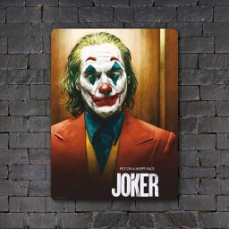

MARVEL
Серия фильмов о супергероях, основаннаяна комиксах
компании Marvel
JOKER
Готэм, начало 1980-х годов. Комик Артур Флек постепенно приходит к выводу,
что этот мир получит от него не добрую улыбку, а ухмылку злодея Джокера.
id="test" --> #test {} - можно задавать стили для всего отдельно по идентификатору
opacity: 0.5; - прозрачность элемента
color: #000000; цвет текста
display: - это свойство нужно для того что бы указать виден элемент или нет, по умолчанию bloсk(виден) если none - НЕвиден
background-image: url(""); картинка для фона блока или класса(задается относительно CSS файла)
background-color: #000000; цвет фона
border: 2px solid #000000 цвет рамки
font-size: 16px; - размер текста
margin: 10px; - расстояние между блоками, отступы(отталкивание между ними)
padding: 10px; - внутренне отталкивание текста от рамак (отступы)
text-align: center; - выравнивание текста в заданном блоке
font-weight: 400; - жирность шрифта
transition: all 0.4s; - время длительности анимации (где all можно конкретный класс указать)
display: inline-block; блоки будут занимать место равное своему размеру
#test:hover {
тут пишем все свойства которые начнут работать при наведении курсора
}